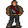

Odirath¶Where to find Odirath: Stoutford: Stoutford armorer
| Type | NPC (talk only; never fought) |
| Role | Shopkeeper |
| Found in | Stoutford |
| Introduced | v0.7.2 |
Shop stock¶
| Item | Chance | Qty |
|---|---|---|
| Reinforced leather buckler | 100% | 1 |
| Chainmail tunic | 100% | 1 |
| Superior leather armor | 100% | 1 |
| Crude wooden shield | 100% | 1 |
| Steel helm | 100% | 1 |
| Hardened leather cap | 100% | 1 |
| Crude iron shield | 100% | 1 |
| Iron shield | 100% | 1 |
| Superior iron shield | 100% | 1 |
| Chainmail mittens | 100% | 1 |
| Steel cuirass | 100% | 1 |
| Hardened leather gloves | 100% | 1 |
| Armored gloves | 100% | 1 |
Quests¶
- Lost girl looking for lost things: stages 10, 70, 170
- Brimhaven warehouse delivery (hidden flag): stage 30
- Stoutford story flags (hidden flag): stage 9
Dialogue simulator¶
Talk to Odirath as you would in the game. When the conversation depends on your progress (a quest, an item, a dice roll…), the simulator asks you. Try another answer with Undo.
Follows the game's own conversation rules (v0.8.18).
Dialogue (20 lines)
Exactly as in the game files. Each line appears once; links jump to where a choice leads.
odirath_0 Odirath: “Welcome to my shop. Are you looking for anything in particular?”
- “Please show me everything you have available.” → shop opens
- “I am looking for my brother, Andor. Have you seen anyone recently that looks a bit like me?” → odirath_1
- “Can you tell me anything about Stoutford?” → odirath_1_1
- “You look a bit worried.” (if NOT reached stage 10 of Lost girl looking for lost things; NOT reached stage 60 of Lost girl looking for lost things) → odirath_2
- “You look happy again.” (if reached stage 60 of Lost girl looking for lost things) → odirath_3
- “Did you really order such an ugly porcelain figure? Oops, sorry I didn't mean to offend you.” (if hand over 1× Pretty porcelain figure; reached stage 10 of Delivery; reached stage 40 of Delivery) → brv_wh_delivery_odirath
- “I have tried to open the southern castle gate, but the mechanism seems broken. Can you repair it?” (if reached stage 5 of Lost girl looking for lost things; NOT reached stage 9 of Stoutford story flags (hidden flag)) → odirath_8
odirath_1 Odirath: “I did see someone that might have been your brother. He was with a rather dubious looking person. They didn't stay around here very long though. Sorry, but that's all I can tell you. You should ask around town. Other townsfolk may know…”
- “Thanks. I'll go and do that now.” → conversation ends
- “Please show me what you have to trade.” → shop opens
- “OK. Can you tell me anything about Stoutford?” → odirath_1_1
odirath_1_1 Odirath: “Stoutford is a small town, and life used to be easy here. A lot of traders stayed in Stoutford on their way to and from Blackwater mountain, and spent money that boosted the economy of the whole town. Those days are gone though.”
- “What happened?” → odirath_1_2
odirath_2 Odirath: “Yes, indeed. My daughter has not come home for some days. I don't know what's happened to her.”
- “And you have no idea where she might be?” → odirath_2_1
odirath_3 (silent check: the first matching branch below is taken)
- branch 1 (if reached stage 99 of Lost girl looking for lost things) → odirath_3_2
- branch 2 → odirath_3_1
brv_wh_delivery_odirath Odirath: “Yes, indeed. A gift for my beautiful daughter... but why did it take so long? Sigh, here's my delivery fee.” — effects: clears stage 40 of Delivery, sets stage 30 of Brimhaven warehouse delivery (hidden flag), gives 30× Gold coins
- “Thank you.” → conversation ends
odirath_8 (silent check: the first matching branch below is taken)
- branch 1 (if NOT reached stage 10 of Stoutford's old castle) → odirath_8a
- branch 2 (if NOT reached stage 20 of Stoutford's old castle) → odirath_8a
- branch 3 (if NOT reached stage 30 of Stoutford's old castle) → odirath_8a
- branch 4 (if NOT reached stage 60 of Lost girl looking for lost things) → odirath_8b
- branch 5 → odirath_8c
odirath_1_2 Odirath: “The path to Blackwater mountain was cut off by a rock fall. That stopped most of the traders from coming here. The attacks by the monsters stopped the rest.”
- “How do I get to Blackwater mountain?” → odirath_1_3
- “Monsters?” → odirath_1_4
odirath_2_1 Odirath: “I've been looking for her all over Stoutford. She does not leave the city. So she can only be in the castle, or kidnapped, or worse.”
- “Did you already look for her in the castle?” → odirath_2_2
odirath_3_2 (silent check: the first matching branch below is taken) — effects: sets stage 170 of Lost girl looking for lost things
- branch 1 → odirath_3_3
odirath_3_1 (silent check: the first matching branch below is taken) — effects: sets stage 70 of Lost girl looking for lost things
- branch 1 → odirath_3_3
odirath_8a Odirath: “No, sorry. As long as there are still skeletons running around the castle, I can't work there.”
- “I understand.” → odirath_0
odirath_8b Odirath: “I can do that as soon as my daughter is back here.”
- “I understand.” → odirath_0
odirath_8c Odirath: “The gate mechanism is broken? No problem. Now that the skeletons are gone, I can fix it for you.” — effects: sets stage 9 of Stoutford story flags (hidden flag)
- “Great!” → odirath_0
odirath_1_3 Odirath: “Just follow the path west, but you will have to find a way past the rockfall.”
- “Thanks for the directions. I'm headed there right now.” → conversation ends
- “Thanks. What about the monsters?” → odirath_1_4
- “Thanks for the information. Please show me what you have to trade.” → shop opens
odirath_1_4 Odirath: “They started attacking the town recently. Nobody is sure why. Their attacks have been unsuccessful, so we are all hoping that they will give up soon and go back to wherever they came from.”
- “Thanks for the information, but I have to leave.” → conversation ends
- “Thanks for the information. Do you have anything to trade?” → shop opens
- “Thanks. I'm looking for my brother, Andor. Has anyone new been through here recently?” → odirath_1
- “How do I get to Blackwater mountain?” → odirath_1_3
odirath_2_2 Odirath: “You cannot go to the castle anymore, do not you know that? At least not if you want to continue living.”
- “I see. She will certainly reappear soon. In the meantime you could show me everything you have for sale.” → shop opens
- “I am also looking for someone: my brother, Andor. Have you seen anyone recently that looks a bit like me?” → odirath_1
- “OK. Can you tell me anything about Stoutford?” → odirath_1_1
- “I'm not afraid. I could have a look in the castle.” → odirath_2_3
odirath_3_3 Odirath: “Gyra is back and has told me everything. Many thanks again for your help.”
- “I was happy to do it.” → odirath_3_5
odirath_2_3 Odirath: “You would do that for me? I can hardly accept your offer.” — effects: sets stage 10 of Lost girl looking for lost things
- “I'm on my way.” → conversation ends
- “No problem, but first I have something else I wish to discuss.” → odirath_0
odirath_3_5 Odirath: “Please give the helmet to its owner Lord Bourbon - eh, Lord Berbane I mean. He will be in the tavern.”
- “OK.” → conversation ends
- “I did that already. But he didn't seem to be happy about it.” (if reached stage 90 of Lost girl looking for lost things) → conversation ends
- “I did that already. Although he won't need it, because the castle is already clear of the undead.” (if reached stage 149 of Stoutford story flags (hidden flag)) → conversation ends
- “Maybe.” → conversation ends
Version history¶
| Version | Change |
|---|---|
| v0.7.2 | Added Dialogue: 15 lines added |
| v0.7.17 | Dialogue: 1 line added, 1 line changed |
| v0.8.12.1 | Dialogue: 1 line changed |
| v0.8.14 | Dialogue: 4 lines added, 1 line changed |
Verified against v0.8.18 and every earlier release back to v0.7.0 (game data compared release by release).
Behind the scenes¶
How the game data handles this character. Not needed for playing.
Technical information
| Entry ID | stoutford_armorer |
| Type (wiki) | NPC |
| Spawn group | stoutford_armorer |
| Loot table | shop_odirath |
| Conversation | odirath_0 |
| Faction | – |
| Movement | – |
| Icon | monsters_ld1:10 |
| Defined in | res/raw/monsterlist_stoutford_combined.json |
Raw data:
{
"id": "stoutford_armorer",
"name": "Odirath",
"iconID": "monsters_ld1:10",
"monsterClass": "humanoid",
"spawnGroup": "stoutford_armorer",
"phraseID": "odirath_0",
"droplistID": "shop_odirath"
}
Community notes¶
Written by players, not generated from game data. Observations: what players notice in-game · Lore: the in-world story · Trivia: real-world facts, references, development history · Theory / speculation: unconfirmed ideas; may just be unfinished content
Observations¶
No notes yet. Contributions are welcome: add a note.
Lore¶
No notes yet. Contributions are welcome: add a note.
Trivia¶
No notes yet. Contributions are welcome: add a note.
Theory / speculation¶
No notes yet. Contributions are welcome: add a note.
Data from v0.8.18